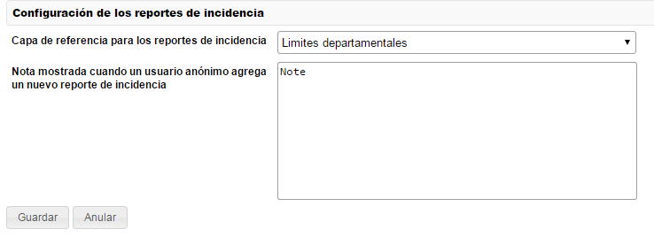
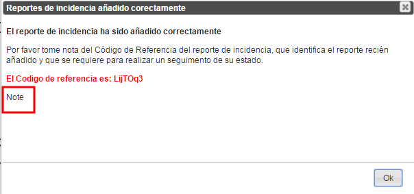
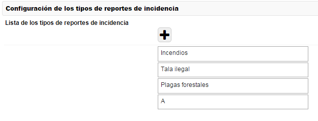
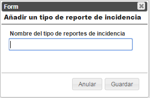
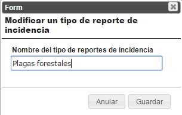
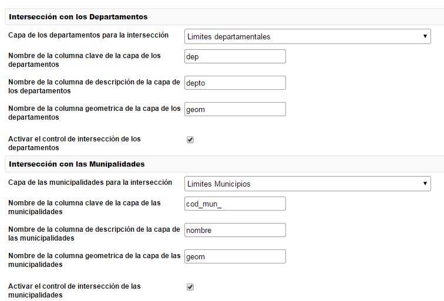

Configuración de Reportes de Incidencia
Permite definir ajustes relacionados con los Reportes de Incidencia.

Capa de referencia y definicion de la nota de nuevos reportes de incidencia
Capa de referencia para los reportes de incidencia
Permite elegir la capa de referencia que el Geoportal carga automáticamente en el mapa cuando el usuario accede a la funcionalidad de los reportes de incidencia.
Nota
Permite definir una nota personalizada que el Geoportal agrega al mensaje mostrado al usuario anónimo cuando un nuevo Reporte de Incidencia ha sido agregado con éxito (Ver la imagen siguiente).

Configuración de los tipos de Reportes de Incidencia
Permite definir los tipos de Reportes de Incidencia.

Añadir un tipo de Reporte de Incidencia
Una ventana permite al usuario insertar un nuevo tipo de Reporte de Incidencia.

Añadir un nuevo tipo

Ventana de insercion de un nuevo tipo de RdI
Eliminar un tipo de Reporte de Incidencia
Permite eliminar un tipo de RdI..

Eliminar un RdI.
Modificar un tipo de Reporte de Incidencia
Una ventana permite al usuario modificar un tipo de Reporte de Incidencia existente.

Modificar un tipo de RdI
La ventana se parece a la de inserción de un nuevo tipo de RdI.

Modificar un tipo de RdI
Configuración de los controles de intersección de los Reportes de Incidencia
Esta sección permite configurar la intersección de los Reportes de Incidencia con los Departamentos y con las Municipalidades.

Controles de intersección
Interseccion con los Departamentos
Capa de los departamentos para la intersección: permite eligir la capa donde se encuentran los departamentos. Esta capa es utilizada port el Geoportal para hacer las intersecciones con los Reportes de Incidencia para verificar que caen dentro del Departamento correcto.
- Nombre de la columna clave de la capa de los departamentos: nombre del campo de la capa de los departamentos que contiene un identificativo clave que identifica unívocamente cada departamento.
- Nombre de la columna de descripción de la capa de los departamentos: nombre del campo de la capa de los departamentos que contiene la descripción del departamento. Esta informacion es utilizada por el Geoportal para mostrar al usuario el nombre del departamento.
- Nombre de la columna geométrica de la capa de los departamentos: nombre del campo de la capa de los departamentos que contiene la geometría del dato.
- Activar el control de intersección de los departamentos: permite eligir si activar el control de intersecion de los Reportes de incidencia con los Departamentos, para averiguar que un RdI efectivamente caa dentro del departamento especificado por el usuario. Este control es utilizado tambien durante la inserción por el SIT Municipal.
Intersección con las Municipalidades
Capa de las municipalidades para la intersección: permite elegir la capa donde se encuentran las municipalidades. Esta capa es utilizada por el Geoportal para hacer las intersecciones con los Reportes de Incidencia y determinar los Reportes de Incidencia que caen dentro de una específica municipalidad.
- Nombre de la columna clave de la capa de las municipalidades: nombre del campo de la capa de las municipalidades que contiene un identificativo clave que identifica unívocamente cada municipalidad.
- Nombre de la columna de descripción de la capa de las municipalidades: nombre del campo de la capa de las municipalidades que contiene la descripción de la municipalidad.
- Nombre de la columna geométrica de la capa de las municipalidades: nombre del campo de la capa de las municipalidades que contiene la geometría del dato.
- Activar el control de intersección de las municipalidades: permite elegir si activar el control de intercesión de los Reportes de incidencia con las municipalidades. El control es utilizado en el servicio de integración con el Geoportal y permite determinar los RdI que caen dentro a una municipalidad específica.